TP1 - REDES NEURONALES
-
Alumno: Lautaro De Lucia
-
Padrón: 100203
-
Fecha: 25/11/24
Introducción
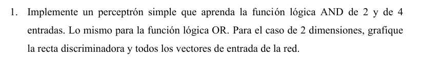
- Consideramos un perceptrón de 2 entradas como el de la figura

- La ecuación que ilustra su comportamiento es de la forma:
- Para este caso, elegimos utilizar la función escalón unitario (step function) como función de activación, ya que sus salidas y son consistentes con los estados lógicos HIGH y LOW utilizados en compuertas lógicas. Luego, la expresión anterior puede escribirse en notación vectorial, lo que además nos permite generalizar para entradas
- es fácil ver que el hiperplano cuya normal es marca la división entre las dos clases de la salida .

- Para el caso de dos dimensiones, obtenemos la ecuación de la recta discriminante de la expresión anterior.
- Una vez entrenado el perceptrón, esta recta debería tomar una forma como la ilustrada a continuación para AND y OR respectivamente.

- Ambos problemas son linealmente separables, por lo que nuestro perceptrón siempre converge a una solución. Como sabemos, la regla de aprendizaje es la siguiente:
-
Siendo el valor deseado, el obtenido, el factor de aprendizaje y las entradas.
-
Conceptualmente, en el caso de el perceptrón simple con una única salida binaria, sumar equivale a reorientar a cada vez que ocurre una clasificación incorrecta en una dirección que busca reducir el error obtenido.

- Luego, podemos resumir el proceso de entrenamiento de el perceptrón simple de la siguiente forma:
- Inicializamos los pesos y el bias aleatoriamente.
- Para cada patrón del set de entrenamiento.
- Calculamos la salida
- Si hay un error , actualizamos los pesos y el bias según la regla
- Caso contrario, no se realizan cambios.
- Repetimos hasta que no haya errores en la clasificación o se llegue a un número máximo de iteraciones (indicativo de que el problema no es linealmente separable y por ende no se converge a una solución).
- Calculamos la salida
Implementación del Perceptrón Simple
-
Definimos la clase
SimplePerceptroncon los métodostrainypredict. La funcióntrainrecibe las entradas y salidas esperadas del perceptrón (esto es, el set de entrenamiento), así como el factor de aprendizaje y un máximo número de iteraciones (a modo de contemplar que el problema pueda no ser linealmente separable), y realiza el entrenamiento. El método esta diseñado a modo de ser agnóstico al número de inputs (tanto en cantidad como dimensión). -
Al finalizar su ejecución, los pesos de la red se habrán actualizado. Adicionalmente, se designa un arreglo con el error en cada paso del entrenamiento como otro atributo de la clase. En la medida en que el problema sea linealmente separable, este debería mostrar una tendencia descendente y converger a cero.
-
Por último, la función de activación elegida es la
step. Se elige deliberadamente que el output sea o en lugar de y a modo de que haya una consistencia conceptual con la notación usual de las compuertas lógicas.
class SimplePerceptron:
def __init__(self, learning_rate=0.01, max_iterations=1000):
self.learning_rate = learning_rate
self.max_iterations = max_iterations
self.weights = None
self.bias = None
self.errors_ = [] # Lista para almacenar los errores por época
def step_function(self, x):
"""Función escalón unitario"""
return np.where(x >= 0, 1, 0)
def train(self, inputs, outputs):
"""Entrena el perceptrón usando el algoritmo descrito y registra los errores"""
# Inicializamos el número de muestras y características
num_samples, num_features = inputs.shape
# Inicializamos los pesos y el bias
self.weights = np.zeros(num_features)
self.bias = 0
# Algoritmo de entrenamiento
for _ in range(self.max_iterations):
errors = 0
for i in range(num_samples):
# Producto escalar entre los pesos y las entradas
linear_output = np.dot(inputs[i], self.weights) + self.bias
predicted_output = self.step_function(linear_output)
# Actualización de los pesos si hay error
error = outputs[i] - predicted_output
if error != 0:
self.weights += self.learning_rate * error * inputs[i]
self.bias += self.learning_rate * error
errors += 1
# Almacenar el número de errores de esta época
self.errors_.append(errors)
# Si no hay errores, terminamos el entrenamiento
if errors == 0:
break
def predict(self, inputs):
"""Realiza predicciones con los pesos entrenados"""
linear_output = np.dot(inputs, self.weights) + self.bias
return self.step_function(linear_output)
- Adicionalmente, se define una función
plot_decision_boundaryque utiliza los parámetros obtenidos durante el entrenamiento y realiza una gráfica de la recta discriminante así como las entradas correspondientes a cada perceptrón, distinguiendo su clasificación con colores.
def plot_decision_boundary(self, inputs, outputs, title=''):
"""Grafica la recta discriminante y los datos de entrada"""
# Verificar que las entradas sean bidimensionales
if inputs.shape[1] != 2:
raise ValueError("La función plot_decision_boundary solo soporta entradas de 2 características.")
# Crear una malla de puntos para graficar la frontera de decisión
x_min, x_max = inputs[:, 0].min() - 1, inputs[:, 0].max() + 1
y_min, y_max = inputs[:, 1].min() - 1, inputs[:, 1].max() + 1
xx, yy = np.meshgrid(np.linspace(x_min, x_max, 200),
np.linspace(y_min, y_max, 200))
grid_points = np.c_[xx.ravel(), yy.ravel()]
Z = self.predict(grid_points)
Z = Z.reshape(xx.shape)
# Crear el gráfico
plt.figure(figsize=(8, 6))
plt.contourf(xx, yy, Z, alpha=0.2, cmap=plt.cm.Paired)
# Graficar los puntos de datos
scatter = plt.scatter(inputs[:, 0], inputs[:, 1], c=outputs, s=100, edgecolors='k', cmap=plt.cm.Paired, marker='o')
# Configurar el gráfico
plt.xlabel('Input 1')
plt.ylabel('Input 2')
plt.title(title)
plt.xlim(xx.min(), xx.max())
plt.ylim(yy.min(), yy.max())
# Añadir leyenda
legend = plt.legend(*scatter.legend_elements(), title="Clases")
plt.gca().add_artist(legend)
plt.show()
- Finalmente, definimos una función
plot_errorsque simplemente realice un plot de la evolución del error que se obtuvo durante el entrenamiento.
def plot_errors(self, title='Evolución del error de clasificación'):
"""Grafica la evolución del error de clasificación durante el entrenamiento"""
plt.figure(figsize=(8, 6))
plt.plot(range(1, len(self.errors_) + 1), self.errors_, marker='o')
plt.xlabel('Épochs')
plt.ylabel('Errores de clasificación')
plt.title(title)
plt.grid(True)
plt.show()
Resultados
-
A continuación se muestra el código que hace uso de esta clase a los propósitos de el enunciado así como los resultados de su ejecución.
-
AND 2 Entradas
import numpy as np
# Datos para la compuerta AND
inputs_and = np.array([[0, 0], [0, 1], [1, 0], [1, 1]])
outputs_and = np.array([0, 0, 0, 1])
# Crear y entrenar el perceptrón para AND
perceptron_and = SimplePerceptron(learning_rate=0.1, max_iterations=10)
perceptron_and.train(inputs_and, outputs_and)
# Graficar la frontera de decisión para AND
perceptron_and.plot_decision_boundary(inputs_and, outputs_and, title='Frontera de decisión para la compuerta AND')
# Graficar la evolución del error de clasificación
perceptron_and.plot_errors(title='Evolución del error para la compuerta AND')
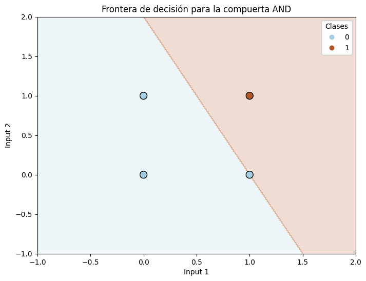

-
OR 2 Entradas
# Datos para la compuerta OR
inputs_or = np.array([[0, 0], [0, 1], [1, 0], [1, 1]])
outputs_or = np.array([0, 1, 1, 1])
# Crear y entrenar el perceptrón para OR
perceptron_or = SimplePerceptron(learning_rate=0.1, max_iterations=10)
perceptron_or.train(inputs_or, outputs_or)
# Graficar la frontera de decisión para OR
perceptron_or.plot_decision_boundary(inputs_or, outputs_or, title='Frontera de decisión para la compuerta OR')
# Graficar la evolución del error de clasificación
perceptron_or.plot_errors(title='Evolución del error para la compuerta OR')
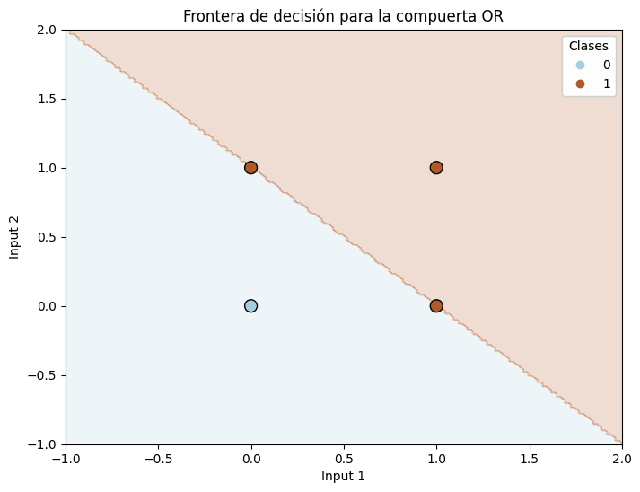

-
Notamos que en ambos casos las rectas discriminantes se grafican correctamente. En ambos casos se comienza con 2 clasificaciones erroneas de 4 y se consigue un error de clasificación de 0 al cabo de 4 iteraciones (el número de interaciones, por supuesto, no tiene por qué ser el mismo).
-
La consigna solicita que hagamos lo mismo para un perceptrón AND y OR de 4 entradas. Podemos usar la misma función
train_simple_perceptronde antes, modificando los inputs para que reflejen la tablas tablas de verdad y de 4 entradas respectivamente.
# Generar todas las combinaciones posibles de 4 bits
inputs_4 = np.array([[int(x) for x in f"{i:04b}"] for i in range(16)])
# Compilación de los datos para AND de 4 entradas
outputs_and_4 = np.array([1 if np.all(row) else 0 for row in inputs_4])
# Crear y entrenar el perceptrón para la compuerta AND de 4 entradas
perceptron_and_4 = SimplePerceptron(learning_rate=0.1, max_iterations=20)
perceptron_and_4.train(inputs_4, outputs_and_4)
# Graficar la evolución del error de clasificación para AND
perceptron_and_4.plot_errors(title='Evolución del error para la compuerta AND de 4 entradas')
# Compilación de los datos para OR de 4 entradas
outputs_or_4 = np.array([1 if np.any(row) else 0 for row in inputs_4])
# Crear y entrenar el perceptrón para la compuerta OR de 4 entradas
perceptron_or_4 = SimplePerceptron(learning_rate=0.1, max_iterations=20)
perceptron_or_4.train(inputs_4, outputs_or_4)
# Graficar la evolución del error de clasificación para OR
perceptron_or_4.plot_errors(title='Evolución del error para la compuerta OR de 4 entradas')

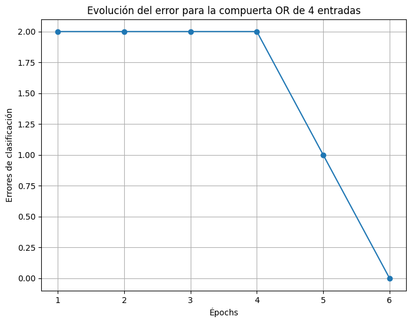
- En donde a pesar de no poder visualizar el hiperplano discriminante, si podemos corroborar que el error converge eventualmente a cero, como debe hacerlo por definición en problemas linealmente separables como es el caso de las compuertas AND y OR.
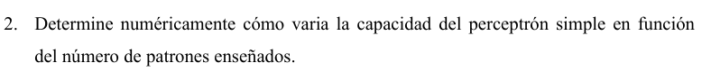
-
Sabemos que en la medida en que el patrón a clasificar sea linealmente separable, el perceptrón siempre va a encontrar una solución en un número finito de pasos, esto es, un conjunto de pesos que clasifiquen correctamente cada punto de el patrón. Conversamente, sabemos que en la medida en que el patrón no sea linealmente separable el perceptrón simple jamás puede converger a una solución.
-
Luego, una definición precisa de la capacidad del perceptrón, entendida como la cantidad más alta de patrones aleatorios que el perceptron puede aprender para cierta cantidad de inputs, es la siguiente:
-
Siendo una función de la cantidad de patrones y la dimensión de los inputs.
-
Por otro lado, es fácil darse cuenta que para una clasificación binaria la cantidad total de problemas siempre es .
-
El ejercicio requiere que aproximemos este valor. Puntualmente, en lugar de computar todos los problemas posibles, lo que vamos a hacer es computar problemas aleatorios, definiendo un estimador eligiendo un valor fijo y graficando la variación de en función de . Si el error luego de entrenar es cero, entonces el problema es linealmente separable y sumo un en .
-
Nuestra gráfica debería aproximar el resultado discutido en la teoría.

-
El cual sostiene (número de patrones que pueden clasificarse correctamente sobre el total) tiende a 1 (todos los patrones se clasifican correctamente) cuando el número de patrones es significativamente menor que el número de inputs, y tiende a 0 cuando es significativamente mayor. En el límite, cuando , tenemos que , esto es, que la cantidad de patrones que el perceptrón simple puede aprender es exactamente el doble que el número de inputs.
-
Conceptualmente, lo que se esta indicando es que cuanto menor sea el número de patrones a clasificar para un número dado de inputs, mayor es la probabilidad de que la clasificación se lleve a cabo correctamente. Es fácil ver que un perceptrón simple de inputs no tiene problema alguno en clasificar para o . Sin embargo, cuando tenemos casos no linealmente separables como la operación , resultando en que sea distinto de 1.
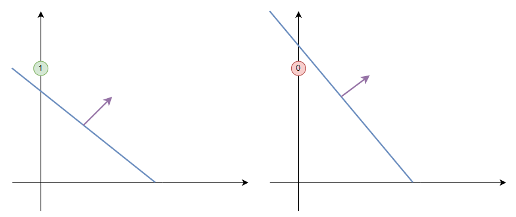

-
El algoritmo, entonces, es como sigue:
- Genero patrones aleatorios con .
- Entreno el perceptrón y resuelvo para cada uno.
- Si aprendió correctamente, sumamos uno.
- Divido problemas aprendidos por problemas totales para estimar la capacidad.
-
Para ello, nos podemos valer de la clase SimplePerceptron definida en el ejercicio 1. Definimos un método
estimate_capacityque reciba el número de inputs a la entrada y devuelva dos listas, una con y otra con la capacidad estimada
def simulate_capacity(self, N, num_experiments=100):
"""
Estima la capacidad C(N, p) para valores de p desde 1 hasta 4*N.
Parámetros:
N: Cantidad de Inputs
num_experiments: Número de experimentos aleatorios por valor de p (por defecto 100).
Devuelve:
p_over_N_list: Lista de valores p/N.
capacity_list: Lista de estimaciones de C(N, p).
"""
max_p = int(4 * N)
p_values = range(1, max_p + 1)
capacity_list = []
p_over_N_list = []
for p in p_values:
separable_count = 0
for _ in range(num_experiments):
# Generar entradas aleatorias
inputs = np.random.uniform(-1, 1, (p, N))
# Generar etiquetas aleatorias (0 o 1)
outputs = np.random.choice([0, 1], size=p)
# Entrenar el perceptrón
self.train(inputs, outputs)
# Verificar si el perceptrón separa perfectamente los datos
predictions = self.predict(inputs)
if np.array_equal(predictions, outputs):
separable_count += 1
# Calcular la fracción de conjuntos linealmente separables
capacity = separable_count / num_experiments
capacity_list.append(capacity)
p_over_N_list.append(p / N)
return p_over_N_list, capacity_list
- Hacemos uso de este método para generar el gráfico de
import numpy as np
import matplotlib.pyplot as plt
# Valores de N a considerar
N_values = [2, 5, 10, 20]
# Crear una instancia del perceptrón
perceptron = SimplePerceptron(learning_rate=0.1, max_iterations=100)
# Configurar el número de experimentos
num_experiments = 100
# Colores y estilos para el gráfico
colors = ['r', 'g', 'b', 'm']
styles = ['-o', '-s', '-^', '-d']
plt.figure(figsize=(10, 6))
for N, color, style in zip(N_values, colors, styles):
# Simular la capacidad para el valor actual de N
p_over_N_list, capacity_list = perceptron.simulate_capacity(N, num_experiments=num_experiments)
# Graficar los resultados
plt.plot(p_over_N_list, capacity_list, style, color=color, label=f'N = {N}')
# Configurar el gráfico
plt.xlabel('p / N')
plt.ylabel('C(N, p)')
plt.title('Estimación de la capacidad C(N, p) del perceptrón')
plt.legend()
plt.grid(True)
plt.show()
- A continuación, se muestran las gráficas obtenidas para
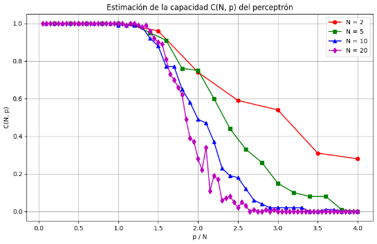
- Donde puede corroborarse que efectivamente, a medida que crece el gráfico se aproxima más a la forma derivada teóricamente.
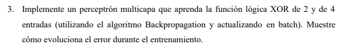
Introducción
- Por simplicidad, vamos a considerar un perceptrón de 2 capas, cuya estructura se ilustra a continuación.
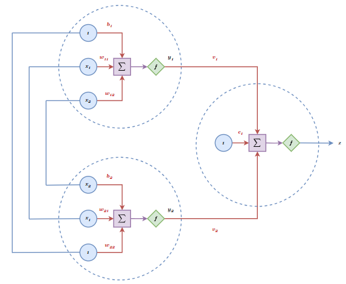
- Donde claramente tenemos 2 neuronas en la primera capa (input layer) y una neurona en la segunda capa (output layer). Consideramos 2 entradas para cada neurona así como un término de bias. En los 3 casos, se elige una sigmoide como función de activación.
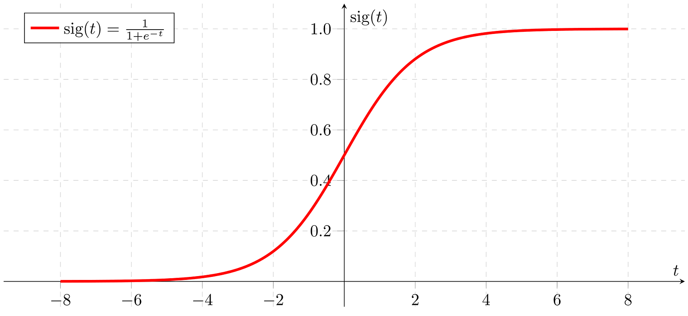
- A pesar de su sencillez, sabemos dado lo visto en clase que teóricamente un perceptrón como el de la figura es suficiente para vencer el obstáculo de la separabilidad lineal que impone la XOR de 4 entradas.
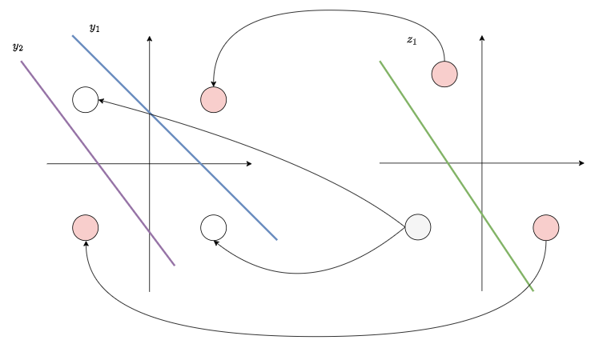
Mecanismo de Aprendizaje
-
La ecuación para este perceptrón toma la forma:
-
El error sigue definiendose de la misma forma:
-
Y el aprendizaje consiste en implementar back-propagation para los pesos de estas 3 neuronas.
- En la output layer:
- En la input layer:
- En la output layer:
-
Dada la consigna, queremos hacer una implementación que nos permita generalizar el perceptrón de la figura a cualquier número de entradas. Para ello es fácil observar que la sumatoria previamente expresada puede representarse en términos de álgebra lineal. Considerando nuestros 2 inputs:
-
Donde es la suma ponderada de los inputs en la hidden layer, es la suma ponderada de las salidas de la hidden layer en la output layer, y es la función sigmoide.
-
Generalizado para cualquier cantidad de inputs, tenemos las ecuaciones matriciales:
- Lo cual nos permite reformular el gradiente de el error en cada capa en término de estas expresiones
Implementación
- Definimos entonces una clase
TwoLayerPerceptronanáloga a nuestroSimplePerceptrónutilizado en los primeros 2 ejercicios, donde ahora los métodos de aprendizaje y predicción se ajustan a la estructura descrita en la sección anterior de este mismo ejercicio.
class TwoLayerPerceptron:
def __init__(self, input_size, input_layer_size=2, learning_rate=0.1, max_epochs=100000):
self.input_size = input_size # Número de entradas
self.input_layer_size = input_layer_size # Número de neuronas en la capa oculta
self.learning_rate = learning_rate
self.max_epochs = max_epochs
self.error_cut_condition = 0.005
# Inicialización de pesos y bias para la capa oculta
self.W = np.random.uniform(-1, 1, (self.input_size, self.input_layer_size))
self.b_input_layer = np.random.uniform(-1, 1, (1, self.input_layer_size))
# Inicialización de pesos y bias para la capa de salida
self.V = np.random.uniform(-1, 1, (self.input_layer_size, 1))
self.b_output = np.random.uniform(-1, 1, (1, 1))
# Lista para almacenar el error en cada época
self.errors_ = []
def sigmoid(self, x):
"""Función de activación sigmoide"""
return 1 / (1 + np.exp(-x))
def sigmoid_derivative(self, x):
"""Derivada de la función sigmoide"""
return x * (1 - x)
def train(self, X, y):
"""Entrena la red neuronal usando el algoritmo de backpropagation con condición de corte"""
for epoch in range(self.max_epochs):
# FORWARD PASS
# Capa oculta
input_layer_input = np.dot(X, self.W) + self.b_input_layer # H_1 = X * W + b_input_layer
input_layer_output = self.sigmoid(input_layer_input) # y = g(H_1)
# Capa de salida
final_input = np.dot(input_layer_output, self.V) + self.b_output # H_2 = y * V + b_output
final_output = self.sigmoid(final_input) # z = g(H_2)
# BACKWARD PASS
# Calcular el error
error = y - final_output # Error en la salida
mse = np.mean(np.square(error)) # Error cuadrático medio
# Almacenar el error actual
self.errors_.append(mse)
# Condición de corte: detener si el ECM es menor a 0.005
if mse < self.error_cut_condition:
print(f"Entrenamiento detenido en el epoch {epoch + 1} debido a que el ECM alcanzó {mse:.6f}")
break
# Calcular el delta en la capa de salida
delta_output = error * self.sigmoid_derivative(final_output) # δ_o = (z_d - z) * g'(H_2)
# Calcular el delta en la capa oculta
delta_input_layer = delta_output.dot(self.V.T) * self.sigmoid_derivative(input_layer_output) # δ_h = δ_o * V^T * g'(H_1)
# Actualizar los pesos y biases
# Actualizar V y b_output (capa de salida)
self.V += self.learning_rate * input_layer_output.T.dot(delta_output)
self.b_output += self.learning_rate * np.sum(delta_output, axis=0, keepdims=True)
# Actualizar W y b_input_layer (capa oculta)
self.W += self.learning_rate * X.T.dot(delta_input_layer)
self.b_input_layer += self.learning_rate * np.sum(delta_input_layer, axis=0, keepdims=True)
def predict(self, X):
"""Realiza predicciones usando la red neuronal entrenada"""
# Capa oculta
input_layer_input = np.dot(X, self.W) + self.b_input_layer
input_layer_output = self.sigmoid(input_layer_input)
# Capa de salida
final_input = np.dot(input_layer_output, self.V) + self.b_output
final_output = self.sigmoid(final_input)
# Convertir la salida a 0 o 1
return np.where(final_output >= 0.5, 1, 0)
def plot_errors(self, title='Evolución del error durante el entrenamiento'):
"""Grafica la evolución del error cuadrático medio durante el entrenamiento"""
plt.figure(figsize=(8, 6))
plt.plot(range(1, len(self.errors_) + 1), self.errors_, marker='o')
plt.xlabel('Épocas')
plt.ylabel('Error cuadrático medio')
plt.title(title)
plt.grid(True)
plt.show()
- A continuación, se muestra la evolución del error para el perceptrón de 2 capas
# Datos de entrada y salida para XOR de 2 entradas
X_2 = np.array([[0, 0],
[0, 1],
[1, 0],
[1, 1]])
y_2 = np.array([[0],
[1],
[1],
[0]])
# Crear una instancia del perceptrón de dos capas
perceptron_2 = TwoLayerPerceptron(input_size=2, input_layer_size=2, learning_rate=0.5, max_epochs=10000)
# Entrenar el perceptrón
perceptron_2.train(X_2, y_2)
# Graficar la evolución del error
perceptron_2.plot_errors(title='Evolución del error para XOR de 2 entradas')
# Realizar predicciones
predictions_2 = perceptron_2.predict(X_2)
print("Predicciones para XOR de 2 entradas:")
print(predictions_2.T)
# Verificar las predicciones
print("Salidas deseadas:")
print(y_2.T)
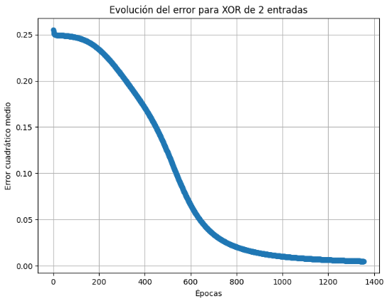
# Generar todas las combinaciones posibles de 4 bits
X_4 = np.array([[int(x) for x in f"{i:04b}"] for i in range(16)])
# Definir la salida de la función XOR de 4 entradas
# La salida es 1 si el número de unos es impar, 0 si es par
y_4 = np.array([[1 if np.sum(row) % 2 != 0 else 0] for row in X_4])
# Crear una instancia del perceptrón de dos capas con más neuronas en la capa de entrada
perceptron_4 = TwoLayerPerceptron(input_size=4, input_layer_size=4, learning_rate=0.5, max_epochs=100000)
# Entrenar el perceptrón
perceptron_4.train(X_4, y_4)
# Graficar la evolución del error
perceptron_4.plot_errors(title='Evolución del error para XOR de 4 entradas')
# Realizar predicciones
predictions_4 = perceptron_4.predict(X_4)
print("Predicciones para XOR de 4 entradas:")
print(predictions_4.T)
# Verificar las predicciones
print("Salidas deseadas:")
print(y_4.T)


Introducción
- Dada la idéntidad entre el primer y segundo inciso en cuanto a implementación, vamos a proceder a definir una red neuronal con 30 neuronas intermedias, 3 inputs y 1 output. Nos valemos de la ambiguedad de el término "capa-oculta" a modo de simplificar la implementación, postulando a los inputs de la red como los valores , ingresando estos directamente a la capa de 30 neuronas. De este modo, no tener que implementar una capa intermedia adicional entre estos inputs y la capa de 30 neuronas (lo que en el ejercicio anterior hubiesemos llamado el input layer o capa de entrada).
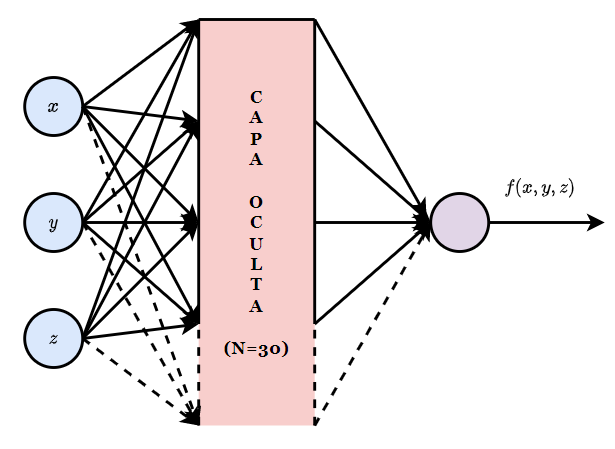
-
Al mismo tiempo, generamos un set de entrenamiento de muestras , donde y . El entrenamiento se hace por back-propagation, comparando la salida deseada, obtenida de la función , con la salida obtenida por la red.
-
Siendo la metodología de entrenamiento la misma (al márgen de que como el resultado es continuo no podemos usar una función de activación binaria optando por una sigmoide en ambas capas), omitimos los detalles teóricos, los cuales fueron explicados en el ejercicio anterior, para concentrarnos en lo que distingue a este ejercicio. Puntualmente:
- En primer lugar, queremos comparar los resultados para entrenamiento en batch y entrenamiento en mini-batch o estocástico. En nuestro caso y dada la consigna, el mini-batch va a tener tamaño y el batch va a tener tamaño .
- En segundo lugar, aunque en la consigna solo se menciona el error de entrenamiento, estamos bastante seguros de que en clase se hizo mención a evaluar el overfitting de la red. Siendo esto así, vamos a construir un set de testeo de muestras y vamos a evaluar el error cuadrático medio de la red en este set (Usualmente, el set de testeo es más chico que el de entrenamiento. Sin embargo, juzgamos que un set con, digamos, muestras no nos va a permitir hacer una evaluación fideligna de la diferencia entre nuestra red y la función original (se corre más riesgo de muestrear outliers).
Implementación
- Comenzamos por generar nuestro set de entrenamiento y testeo
import numpy as np
import matplotlib.pyplot as plt
# Generar el conjunto de entrenamiento (40 muestras)
N_train = 40
x_train = np.random.uniform(0, 2 * np.pi, N_train)
y_train = np.random.uniform(0, 2 * np.pi, N_train)
z_train = np.random.uniform(-1, 1, N_train)
f_train = np.sin(x_train) + np.cos(y_train) + z_train
# Preparar las entradas y salidas para el entrenamiento
X_train = np.column_stack((x_train, y_train, z_train))
y_train = f_train.reshape(-1, 1)
# Generar el conjunto de evaluación (200 muestras)
N_test = 100
x_test = np.random.uniform(0, 2 * np.pi, N_test)
y_test = np.random.uniform(0, 2 * np.pi, N_test)
z_test = np.random.uniform(-1, 1, N_test)
f_test = np.sin(x_test) + np.cos(y_test) + z_test
# Preparar las entradas y salidas para la evaluación
X_test = np.column_stack((x_test, y_test, z_test))
y_test = f_test.reshape(-1, 1)
- Definimos una clase MLP que implementa la red neuronal descrita en el apartado anterior. Como se notará, nuestra clase respeta el formato de las clases definidas en ejercicios anteriores. En particular, nuestro metodo 'train' ahora va recibir el set de testeo, ya que queremos evaluar la evolución de el error sobre este set a medida que se entrena el modelo. Asimismo, se agrega el batch_size como un parámetro del método.
class MLP:
def __init__(self, input_size=3, hidden_size=30, output_size=1, learning_rate=0.01, max_epochs=1000):
self.input_size = input_size # Número de entradas
self.hidden_size = hidden_size # Número de neuronas en la capa oculta
self.output_size = output_size # Número de neuronas en la capa de salida
self.learning_rate = learning_rate
self.max_epochs = max_epochs
# Inicialización de pesos y bias para la capa oculta
self.W = np.random.uniform(-0.5, 0.5, (self.input_size, self.hidden_size))
self.b_hidden = np.zeros((1, self.hidden_size))
# Inicialización de pesos y bias para la capa de salida
self.V = np.random.uniform(-0.5, 0.5, (self.hidden_size, self.output_size))
self.b_output = np.zeros((1, self.output_size))
# Listas para almacenar los errores por época
self.train_errors = []
self.test_errors = []
def sigmoid(self, x):
"""Función de activación sigmoide"""
return 1 / (1 + np.exp(-x))
def sigmoid_derivative(self, x):
"""Derivada de la función sigmoide"""
return x * (1 - x)
def train(self, X_train, y_train, X_test, y_test, batch_size=1):
"""Entrena la red neuronal utilizando backpropagation con soporte para minibatches"""
n_samples = X_train.shape[0]
for epoch in range(self.max_epochs):
# Mezclar los datos de entrenamiento al inicio de cada época
indices = np.arange(n_samples)
np.random.shuffle(indices)
X_train = X_train[indices]
y_train = y_train[indices]
for start in range(0, n_samples, batch_size):
end = start + batch_size
X_batch = X_train[start:end]
y_batch = y_train[start:end]
# FORWARD PASS
# Capa oculta
hidden_input = np.dot(X_batch, self.W) + self.b_hidden # H_1 = X * W + b_hidden
hidden_output = self.sigmoid(hidden_input) # y = g(H_1)
# Capa de salida (lineal)
final_input = np.dot(hidden_output, self.V) + self.b_output # H_2 = y * V + b_output
final_output = final_input # z = H_2 (función de activación lineal)
# BACKWARD PASS
# Calcular el error
error = y_batch - final_output # Error en la salida
# Calcular el delta en la capa de salida
delta_output = error # δ_o = (y_d - z)
# Calcular el delta en la capa oculta
delta_hidden = delta_output.dot(self.V.T) * self.sigmoid_derivative(hidden_output) # δ_h = δ_o * V^T * g'(H_1)
# Actualizar los pesos y biases
# Actualizar V y b_output (capa de salida)
self.V += self.learning_rate * hidden_output.T.dot(delta_output) / batch_size
self.b_output += self.learning_rate * np.sum(delta_output, axis=0, keepdims=True) / batch_size
# Actualizar W y b_hidden (capa oculta)
self.W += self.learning_rate * X_batch.T.dot(delta_hidden) / batch_size
self.b_hidden += self.learning_rate * np.sum(delta_hidden, axis=0, keepdims=True) / batch_size
# Evaluar el error en el conjunto de entrenamiento y testeo
train_output = self.predict(X_train)
train_error = np.mean((y_train - train_output) ** 2)
self.train_errors.append(train_error)
test_output = self.predict(X_test)
test_error = np.mean((y_test - test_output) ** 2)
self.test_errors.append(test_error)
# Mostrar el error cada 100 épocas
if (epoch + 1) % 100 == 0:
print(f"Época {epoch + 1}/{self.max_epochs}, Error de entrenamiento: {train_error:.6f}, Error de evaluación: {test_error:.6f}")
def predict(self, X):
"""Realiza predicciones usando la red neuronal entrenada"""
# Capa oculta
hidden_input = np.dot(X, self.W) + self.b_hidden
hidden_output = self.sigmoid(hidden_input)
# Capa de salida (lineal)
final_input = np.dot(hidden_output, self.V) + self.b_output
final_output = final_input # Función de activación lineal
return final_output
def plot_errors(self):
"""Grafica la evolución del error de entrenamiento y evaluación"""
plt.figure(figsize=(10, 6))
plt.plot(self.train_errors, label='Error de entrenamiento')
plt.plot(self.test_errors, label='Error de evaluación')
plt.xlabel('Épocas')
plt.ylabel('Error cuadrático medio (MSE)')
plt.title('Evolución del error durante el entrenamiento')
plt.legend()
plt.grid(True)
plt.show()
- Graficamos la evolución del error para los tamaños de batche explicitados en la consigna.
# Entrenamiento con batch completo
print("Entrenamiento con batch completo (tamaño de minibatch = 40):")
nn = MLP(learning_rate=0.01, max_epochs=1000)
nn.train(X_train, y_train, X_test, y_test, batch_size=40)
nn.plot_errors()
# Entrenamiento con minibatch de tamaño 1
print("\nEntrenamiento con minibatch de tamaño 1 (estocástico):")
nn_stochastic = MLP(learning_rate=0.01, max_epochs=1000)
nn_stochastic.train(X_train, y_train, X_test, y_test, batch_size=1)
nn_stochastic.plot_errors()
Entrenamiento en Batch
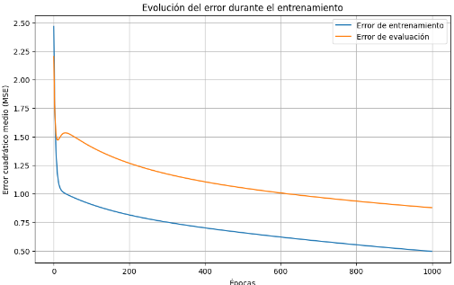
Entrenamiento en Mini-Batch o Estocástico

- Además, en clase se solicitó comparar la salida deseada con la salida real de el modelo en un gráfico cartesiano, donde naturalmente el criterio de la precisión de el modelo es cuanto el gráfico resultante se aproxime a la receta .
y_pred = nn.predict(X_test)
# Gráfico salida real vs salida deseada
plt.figure(figsize=(8, 6))
plt.scatter(y_test, y_pred, c='blue', label='Datos')
plt.plot([y_test.min(), y_test.max()], [y_test.min(), y_test.max()], 'r--', label='Salida deseada = Salida real')
plt.xlabel('Salida deseada')
plt.ylabel('Salida real')
plt.title('Comparación entre la salida deseada y la salida real (Batch completo)')
plt.legend()
plt.grid(True)
plt.show()
y_pred_stochastic = nn_stochastic.predict(X_test)
# Gráfico salida real vs salida deseada
plt.figure(figsize=(8, 6))
plt.scatter(y_test, y_pred_stochastic, c='green', label='Datos')
plt.plot([y_test.min(), y_test.max()], [y_test.min(), y_test.max()], 'r--', label='Salida deseada = Salida real')
plt.xlabel('Salida deseada')
plt.ylabel('Salida real')
plt.title('Comparación entre la salida deseada y la salida real (Minibatch = 1)')
plt.legend()
plt.grid(True)
plt.show()


Observaciones y Conclusiones
- A continuación, discutimos los resultados inmediatamente observables en nuestra implementación y tratamos de explicar sus motivos e implicaciones.
- Para ambos casos el error disminuye gradualmente con cada época, lo que indica que el modelo está aprendiendo correctamente y ajustando sus pesos para minimizar el error cuadrático medio.
- Ahora bién, las curvas de evolución de el error presentan una varianza notablemente mayor en el caso de el entrenamiento estocástico. Estas fluctuacions son esperables dado que en el entrenamiento estocástico cada actualización de los pesos se basa en una sola muestra, resultando en que el gradiente calculado es una estimación ruidosa del gradiente real.
- Notablemente, el error resulta menor tanto en términos absolutos como en términos de la diferencia entre el error de entrenamiento y error de testeo para el caso de entrenamiento estocástico. Entendemos que esto se debe precisamente a que el entrenamiento estocástico actúa como una forma de regularización, ayudando al modelo a generalizar mejor. Coloquialmente, el ruido que introducimos en el gradiente está ayudando a que este no se "atasque" en mínimos locales poco profundos y de esa forma se explore más ampliamente el espacio de parámetros.
- Lo mismo sucede en cuanto a la comparación entre la salida deseada y la real, en la cual el modelo estocástico obtiene mejores resultados. Esto se condice con que el error absoluto disminuya más rápido en el caso estocástico. Presumiblemente,la mayor frecuencia de actualización de el caso estocástico permite al modelo adaptarse más rápidamente a las características de los datos, aunque esto ocurra de forma "ruidosa".
- Por último, se aumento el número de epochs con el objeto de evaluar si el error de testeo crecía en algún punto de el entrenamiento, lo cual constituiría la prueba más clara de overfitting. Esto efectivamente ocurrió ligeramente, pero notablemente solo para el entrenamiento estocástico. Vemos que, como es esperado por lo descrito en los incisos anteriores, el error de entrenamiento estocástico eventualmente alcanza un mínimo absoluto (error cero) y ajusta perfectamente los datos de entrenamiento. Ahora bién, como estos datos de entrenamiento son muy pocos, que el modelo se ajuste perfectamente a ellos no es algo bueno, ya que implica que es altamente probable que el modelo no generalice bien sobre nuevos datos, que es lo que refleja un error de testeo que conspicuamente comienza a subir en el punto en que el error de entrenamiento se vuelve nulo.
- En términos de la estructura de nuestra red, especulamos que el hecho de que tenga 30 neuronas en la capa oculta dota al modelo de una gran capacidad. En el entrenamiento estocástico, dado el escueto tamaño del set de entrenamiento, esta capacidad se utiliza para ajustar el modelo a cada muestra individual, resultando en un ajuste perfecto sobre datos de entrenamiento pero poco generalizable. En el entrenamiento batch, en cambio, el modelo está forzado a encontrar una solución que minimice el error promedio sobre todas las muestras, lo que puede actuar como una forma de regularización y prevenir el overfitting.


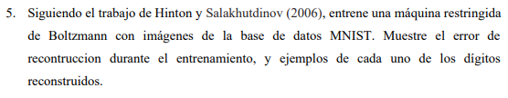
Introducción
- El modelo básico de una RBM se ilustra a continuación. Consiste de una capa visible que representa los datos observables (en nuestro caso, los píxeles de una imágen) y una capa oculta de menor dimensión, y que conceptualmente codifica dependencias entre las capas visibles.

-
Toda RBM involucra una función de energía , (siendo y ) la cual es una medida de la probabilidad conjunta de y . Conceptualmente, podemos decir que una menor energía representa una mayor compatibilidad entre dos activaciones concretas y . Queda claro, entonces, que teniendo una función de energía bién definida podemos obtener una reconstrucción a partir de .
-
Este es un caso de aprendizaje no supervisado, en donde el modelo se entrena a los fines de aprender a reconstruir sus propias entradas, ajustando sus pesos y sesgos para minimizar la diferencia entre las entradas originales y las reconstrucciones.
-
En clase se pidio implementar una versión simplificada con las siguientes características:
- , donde representando la intensidad del pixel.
- , donde con siendo
- A partir de ambas, obtenemos los datos
- Donde es claro que nuestra reconstrucción se obtiene como con . De esta forma obtenemos las reconstrucciones
- Las actualizaciones de pesos y biases para el entrenamiento son entonces:
Implementación
- Utilizamos pytorch como medio de fácil descarga del dataset MNIST, aunque convertimos a numpy para no usarlo en la implementación.
from torchvision import datasets, transforms
import numpy as np
import matplotlib.pyplot as plt
# Descargar MNIST y convertirlo a tensores
mnist_train = datasets.MNIST(
root="./data", train=True, download=True, transform=transforms.ToTensor()
)
mnist_test = datasets.MNIST(
root="./data", train=False, download=True, transform=transforms.ToTensor()
)
# Convertir los datos a NumPy
x_train = mnist_train.data.numpy()
y_train = mnist_train.targets.numpy()
x_test = mnist_test.data.numpy()
y_test = mnist_test.targets.numpy()
# Normalizar las imágenes (entre 0 y 1)
x_train = x_train / 255.0
x_test = x_test / 255.0
print(f"Tamaño del dataset de entrenamiento: {x_train.shape}")
print(f"Tamaño del dataset de prueba: {x_test.shape}")
-
Notese que estamos normalizando las imágenes de el set de datos deliberadamente a pesar de que lo discutido en clase parece insinuar que . El intento inicial de implementar el código con los datos sin normalizar llevo a malos resultados que se juzga son producto de valores iniciales muy grandes en las activaciones. El usar valores normalizados dio resultados satisfactorios, y el único cambio que estos implican respecto a la consigna es corregir la varianza en la normal por un factor de escala de 255.
-
Definimos nuestra clase RBM que implementa los algoritmos discutidos en la sección anterior. Dado el tamaño de el dataset MNIST, el cual volvió el prohibitivo el entrenamiento, se opto por actualizar los pesos y sesgos en batches de tamaño 100, lo cual permitió una convergencia más rápida al tiempo que mostro mejores resultados que reducir el dataset deliberadamente.
class RBM:
def __init__(self, n_visible, n_hidden, learning_rate=0.01):
self.n_visible = n_visible # Número de unidades visibles (28x28 = 784)
self.n_hidden = n_hidden # Número de unidades ocultas
self.learning_rate = learning_rate
# Inicializar pesos y sesgos
self.W = np.random.randn(n_visible, n_hidden) * 0.01 # Pesos pequeños
self.b = np.zeros(n_visible) # Sesgos de la capa visible
self.c = np.zeros(n_hidden) # Sesgos de la capa oculta
def sigmoid(self, x):
return 1 / (1 + np.exp(-x))
def v_to_h(self, v):
"""Sample hidden units given visible units."""
activation = np.dot(v, self.W) + self.c
h_prob = self.sigmoid(activation)
h_sample = np.random.binomial(1, h_prob)
return h_sample
def h_to_v(self, h):
"""Sample visible units given hidden units."""
mean = np.dot(h, self.W.T) + self.b # Mean of Gaussian
v_sample = np.random.normal(mean, 1/255) # Sample from Gaussian with mean and variance 0.01
return v_sample
def contrastive_divergence(self, v0):
"""Perform one step of Contrastive Divergence."""
# Positive phase
h0_sample = self.v_to_h(v0)
D = np.dot(v0.T, h0_sample)
# Negative phase
m1 = self.h_to_v(h0_sample) # Use mean values
m1 = np.clip(m1, 0, 1) # Ensure values are within [0, 1]
h1_sample = self.v_to_h(m1)
R = np.dot(m1.T, h1_sample)
# Update weights and biases
batch_size = v0.shape[0]
self.W += self.learning_rate * (D - R) / batch_size
self.b += self.learning_rate * np.mean(v0 - m1, axis=0)
self.c += self.learning_rate * np.mean(h0_sample - h1_sample, axis=0)
# Compute reconstruction error
error = np.mean((v0 - m1) ** 2)
return error
def train(self, data, epochs=10, batch_size=100):
errors = []
for epoch in range(epochs):
np.random.shuffle(data)
epoch_error = 0
for i in range(0, data.shape[0], batch_size):
batch = data[i : i + batch_size]
error = self.contrastive_divergence(batch)
epoch_error += error
errors.append(epoch_error / (data.shape[0] // batch_size))
print(f"Epoch {epoch + 1}/{epochs}, Error: {errors[-1]:.4f}")
return errors
def reconstruct(self, v):
h_sample = self.v_to_h(v)
m_recon = self.h_to_v(h_sample)
m_recon = np.clip(m_recon, 0, 1) # Ensure values are within [0, 1]
return m_recon
- A partir de este código, evaluamos las reconstrucciones, eligiendo como una compresión razonable una cantidad de neuronas en la capa oculta 4 veces menor a la cantidad de neuronas en la capa visible.
# Aplanar las imágenes de entrenamiento
x_train_flat = x_train.reshape(-1, 784)
# Entrenar la RBM con datos continuos
rbm = RBM(n_visible=784, n_hidden=int((784/4)), learning_rate=0.01)
errors = rbm.train(x_train_flat, epochs=10, batch_size=100)
# Tomar algunas imágenes de prueba
sample_images = x_test[:10] # 10 imágenes de prueba
# Aplanar imágenes de prueba para reconstrucción
sample_images_flat = sample_images.reshape(-1, 784)
# Reconstrucción
v_recon = rbm.reconstruct(sample_images_flat)
reconstructed_images = v_recon.reshape(-1, 28, 28)
# Visualizar originales y reconstruidas
fig, axes = plt.subplots(2, 10, figsize=(20, 4))
for i in range(10):
# Original
axes[0, i].imshow(sample_images[i], cmap="gray")
axes[0, i].axis("off")
# Reconstruida
axes[1, i].imshow(reconstructed_images[i], cmap="gray")
axes[1, i].axis("off")
plt.show()

Conclusiones y Observaciones
- Las reconstrucciones resultan satisfactorias, siendo que ningún dígito se confunde con otro, al márgen de la pérdida de calidad en la imagen.